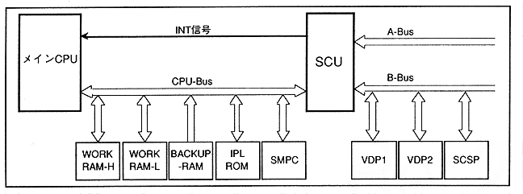

Figure 1.1 shows the system configuration. WORK RAM-H, WORK RAM-L, BACKUP-RAM, IPL ROM, and SMPC are connected to CPU-Bus, and system reset signals and control pad control are executed.
∙ A-Bus is connected to a medium that supplies software such as CD and cartridge as an external system. VDP1, VDP2, and SCSP are connected to B-Bus to control video and audio.
Figure 1.1 System configuration diagram
